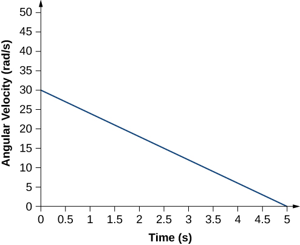
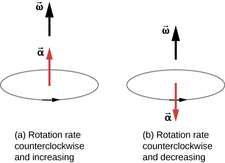
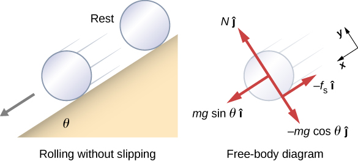
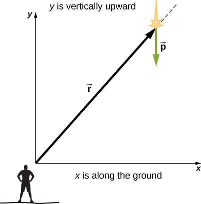
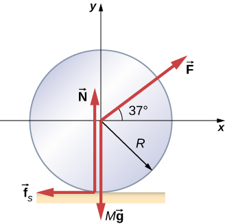
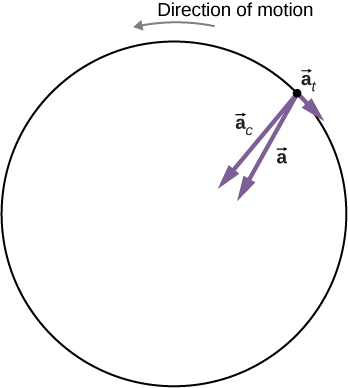
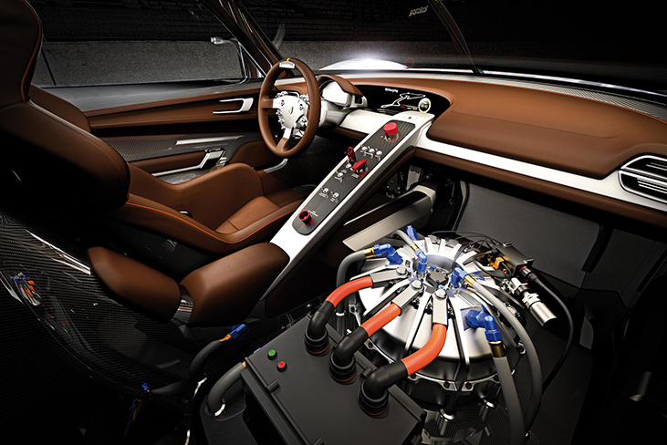
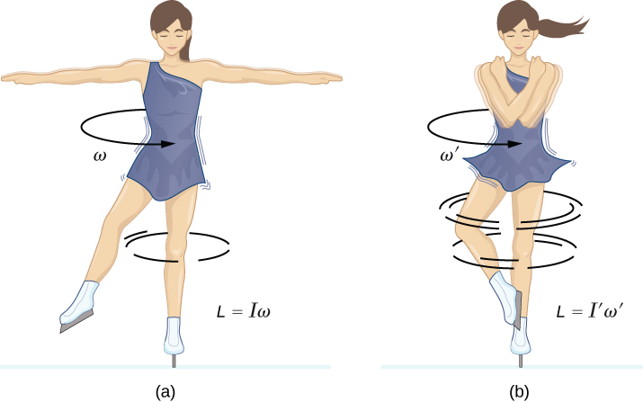
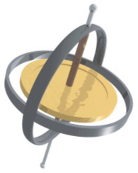
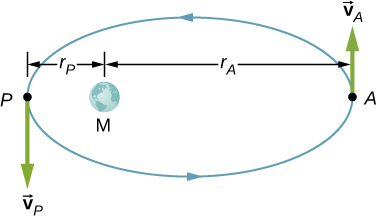

📘 Week 7 — Rotational Motion¶
College Physics 201 — Calculus-Based Physics
Rotational motion is the natural continuation of everything you've done with kinematics, forces, energy, and momentum — but now extended into circular and rigid-body motion.
In this module we will unify:
- Linear vs. rotational analogies
- Angular variables (θ, ω, α)
- Torque (τ)
- Moment of inertia (I)
- Newton’s 2nd Law for rotation:
$$ \tau_{\text{net}} = I\alpha $$ - Rolling without slipping
- Rotational kinetic energy
- Angular momentum (L)
- Conservation of angular momentum
- Precession & gyroscopic motion
🧭 Navigation¶
- Rotational Kinematics
- Torque
- Moment of Inertia
- Rotational Dynamics
- Rolling Without Slipping
- Rotational Energy
- Angular Momentum
- Conservation of Angular Momentum
- Gyroscopes & Precession
- Examples
- Practice Problems
🔵 Rotational Kinematics¶
Angular Variables and Circular Motion¶
Angular motion is described using three primary variables:
- θ — angular position (radians)
- ω — angular velocity (rad/s)
- α — angular acceleration (rad/s²)
Radians are dimensionless. They make calculus work seamlessly.
Hewitt explains rotational motion conceptually as “turning instead of sliding.”
Instead of describing how far something moves, we describe how much it turns.
If an object rotates through angle θ, every point on it sweeps out an arc: $$ s = r\theta $$
This leads to: $$ v = r\omega $$ $$ a_t = r\alpha $$
Circular motion has two accelerations: $$ a_t = r\alpha \quad\text{(tangential, changes speed)} $$ $$ a_c = \omega^2 r \quad\text{(centripetal, changes direction)} $$
- Hard drives
- Gears and pulleys
- Rotating machinery
- Planetary rotations

🔵 Torque¶
The Cause of Rotational Motion¶
Torque determines how effectively a force causes rotation.
Where:
- r = lever arm
- F = applied force
- θ = angle between r and F

From Hewitt: “You can push hard on a door and still fail to open it if you push the wrong way.”
- Perpendicular force → max torque
- Parallel force → zero torque
Torque direction uses the right-hand rule:

- Wrenches and tools
- Human joints
- Bicycles
- Torque on pulleys
🔵 Moment of Inertia¶
Rotational Inertia: The Rotational Form of Mass¶
Mass far from the axis contributes more to inertia.

Knight emphasizes:
“Rotational inertia is not just about how much mass — it’s about where that mass is distributed.”
Example:
- Solid disk → small I
- Hoop → large I (all mass at the rim)

Parallel-axis theorem: $$ I = I_{cm} + Md^2 $$
Useful for rods, doors, rotating limbs.

🔵 Rotational Dynamics¶
Newton’s Second Law for Rotation¶
This is the rotational form of: $$ F_{\text{net}} = ma $$
If you apply more torque:
- Angular acceleration increases
- Rotation direction depends on sign of torque
- Mass distribution (I) determines resistance

Pulley systems: 
🔵 Rolling Without Slipping¶
Translation + Rotation Combined¶
The rolling condition: $$ v = r\omega $$
Bottom point: momentarily at rest
Top point: moving at 2v

Hewitt:
“Rolling is walking and spinning at the same time.”
Static friction provides the link — but does no work.
- Bicycles
- Rolling robots
- Car wheels
- Bowling balls
🔵 Rotational Energy¶
Energy of Rolling Objects¶
Shapes with smaller I accelerate faster down a ramp.
Energy diagrams:

🔵 Angular Momentum¶
Rotational Equivalent of Linear Momentum¶
Direction given by the right-hand rule.

Hewitt’s intuitive model:
- A spinning object “wants” to keep spinning
- More rotational inertia → harder to change ω
Figure skater diagrams: 
🔵 Conservation of Angular Momentum¶
When No Net External Torque Acts…¶
- Skaters pull arms in → spin faster
- Neutron stars collapse → rotate extremely fast
Planetary formation, collapsing stellar cores.
🔵 Gyroscopes & Precession¶
Why Spinning Objects Defy Intuition¶
Precession occurs when torque acts perpendicular to angular momentum.

Hewitt’s insight:
“A gyroscope does not fall — it moves sideways.”
Because: $$ \vec{\tau} = \frac{d\vec{L}}{dt} $$
🧩 Worked Examples¶
Example 1 — Torque¶
A 0.30 m wrench is used to exert a 120 N force at 90°.
Example 2 — Rotational Dynamics¶
A disk (m = 2.0 kg, r = 0.20 m) has force 10 N applied tangentially.
-
\[ \tau = rF = 2.0\text{ N·m} \]
-
\[ I = \frac12 mr^2 = 0.04 \]
-
\[ \alpha = \frac{\tau}{I} = 50\text{ rad/s}^2 \]
📝 Practice Problems¶
- Compute \(\omega\) after 3 seconds if \(\alpha = 4 \text{ rad/s}^2\) from rest.
- A force of 15 N is applied at 60° to a 0.40 m bar. Find τ.
- Determine \(I\) for a hoop of mass 2 kg and radius 0.5 m.
- A skater pulls arms in and reduces I to half. What happens to ω?
- A rolling sphere (I = 2/5 mr²) goes down a ramp. Compare to a cylinder.
- \(\omega = 12\text{ rad/s}\)
- \(\tau = 5.2\text{ N·m}\)
- \(I = 0.5\text{ kg·m}^2\)
- ω doubles
- Sphere accelerates faster